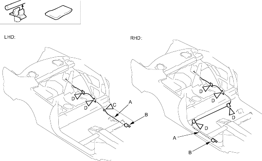

Openers
Trunk Lid Opener/Fuel Fill Door Opener Cable Replacement
|
20-46 |
|
SRS components are located in this area. Review the SRS component locations and the precautions and procedures in the SRS section before performing repairs or service. Refer to the '01 CIVIC Shop Manual, P/N 62S5A00 on this CD.
NOTE:
- Put on gloves to protect your hands.
- Take care not to scratch the body and related parts.
- Remove these items:
- Front door sill trim (see page 20-34)
- Side trim panel, left side (see page 20-35)
- RHD: Side trim panel, right side as necessary (see page 20-35)
- Trunk side trim panel, left side (see page 20-36)
- Pull the carpet back as necessary, refer to the '01 CIVIC Shop Manual on this CD (see page 20-70).
- Disconnect the trunk lid opener/fuel fill door opener cable (A) from the opener (B), refer to the '01 CIVIC Shop Manual on this CD (see step 3 on page 20-129).
Fastener Location
C  : ClipD : Cushion Tape
: ClipD : Cushion Tape
LHD, 1LHD, 2
RHD, 4

- Release the opener cable from the clip (LHD) (C). Remove the cushion tape (D).